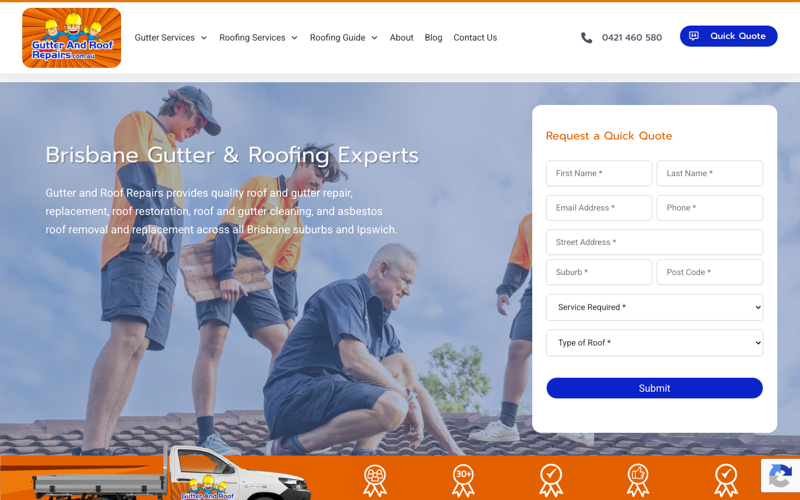
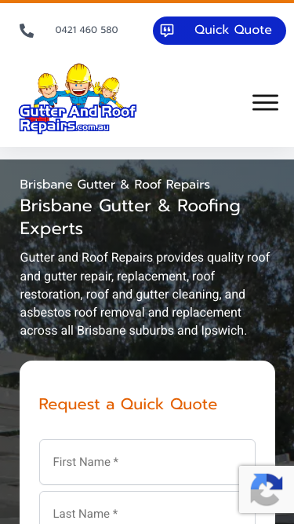

69/100 · moderate_candidate · 行业：roofing · 地区：Brisbane · Google 评价：4.6★ （150 条）
投入分级： B 预览试探 — ChatGPT 生成
mockup hero 图 + 短邮件试反应
触发依据： - moderate_candidate + 150 评论 + audit 69（仍有改进空间）
产品档位： T3 多页站 + 月度运营包
建议报价： 一次性 $5-8K + 月度 $800-1500/月（社媒 + 内容 + GEO）
下一步行动： 用 ChatGPT Image / Gemini Imagen 生成 hero mockup 预览图 + master.md PDF + 1 封 personalized 邮件试探 + 1 次跟进。回应后升级到 A 档处理。
审计结论： audit_score=69 → moderate_candidate · weakest: seo 31, visual 50 · fired: high_traction_old_site
已触发的 hard triggers：
high_traction_old_site
independent_https_site

The site uses a cluttered layout with low-contrast text and a busy background image that distracts from the primary goal of getting a quote.
新鲜度 4/10 · 信任度 5/10 ·
转化准备度 6/10 · 设计年代 outdated
值得保留的优点： - The ‘Quick Quote’ form is visible above the fold, which is good for capturing leads immediately. - The phone number is clearly visible in the header, allowing for direct contact. - The use of orange as an accent color aligns with the construction/roofing industry and draws attention to key elements.
Customers consistently praise the business for its professionalism, clear communication, and high-quality workmanship, with specific appreciation for handling complex or difficult jobs safely and efficiently.
一致夸赞： clear communication ·
professional workmanship ·
punctual and reliable · clean job site ·
fair pricing
可直接放上 redesign 后网站的 quote：
“The whole process was businesslike and professional. I cannot imagine a better experience.” — Bernard, ★★★★★
放哪：Hero section proof of reliability for complex jobs
“They didn’t grumble. They didn’t cut corners. Instead, they explained the problem, got my approval…” — Chris, ★★★★★
放哪：Testimonial section highlighting transparency and problem-solving
“One of their team members showed a week later for a free, no-obligation quote - none of that “pay us just to take a look” nonsense.” — Chris, ★★★★★
放哪：Service page to highlight no-obligation quotes
“The team kept us updated every step of the way, arrived right on schedule, and did a brilliant job.” — Mark, ★★★★★
放哪：General trust signal for homepage
技术事实
The main headline ‘Brisbane Gutter & Roofing Experts’ and the subtext are white with a drop shadow, placed directly over a busy photo of workers on a roof.
普通话翻译
网站主图上的白色文字太淡，背景太花，导致客户很难看清我们在说什么。
对客户的影响
访客通常在 8 秒内决定是否离开。如果文字看不清，他们会认为网站不专业或加载错误，直接关闭页面，导致潜在客户流失。
正确长啥样
A solid dark overlay (e.g., 40% opacity black) behind the text, or a solid color block (like the orange used elsewhere) to make the white text pop. Alternatively, use a cleaner, less busy stock photo.
Redesign 怎么改
Apply a dark gradient overlay to the hero image to ensure the white text has a contrast ratio of at least 4.5:1. Ensure the headline is legible within 2 seconds of landing.
技术事实
title=‘# Brisbane Gutter & Roof Repairs’ contains-name=true contains-niche=false
普通话翻译
你网站的浏览器标签 title 没把业务名字 + 服务关键词写清楚（比如该写「Gutter and Roof Repairs - roofing Brisbane」，但目前是泛泛一句）。
对客户的影响
Google 搜索结果里展示的就是这个 title。写不清楚 = 排名靠后 + 即使排上来客户也不知道是不是匹配的服务。SEO 最便宜的修复，但很多本地企业完全没做。
技术事实
3tags
普通话翻译
页面要么没有 H1 标题（搜索引擎无法理解页面主旨），要么有多个 H1（搜索引擎不知道哪个是主题）。
对客户的影响
H1 是搜索引擎判断页面主题最权威的信号。写错或缺失 = 关键词排名拉低；同一页面同样的内容，H1 写对的可以排到前 3 页，写不对的可能挂在第 7 页。
技术事实
no LocalBusiness JSON-LD
普通话翻译
网站没有 LocalBusiness JSON-LD 结构化数据（让 Google / AI 知道你是本地企业、地址、电话、营业时间的标准格式）。
对客户的影响
Google「附近的服务」「Knowledge Panel」「AI Overview」都依赖这类结构化数据。没有 = 即使排名上去也不会出现在右侧 Knowledge Panel 或地图卡片里 — 错失高转化的展示位。AI agent / ChatGPT 引用本地商家时也是基于这些数据。
技术事实
The logo in the top left features a cartoonish clip-art style with a heavy drop shadow and a sunburst background that looks pixelated.
普通话翻译
左上角的 Logo 看起来像是几十年前的设计，不够清晰，显得不够专业。
对客户的影响
客户在寻找屋顶维修这种高客单价服务时，非常看重信任感。过时的 Logo 会让客户怀疑公司的实力，从而转向竞争对手。
正确长啥样
A flat, vector-based logo with clean lines and modern typography. The icon should be simplified, and the text should be legible at small sizes.
Redesign 怎么改
Redesign the logo to be flat and vector-based. Remove the sunburst background and heavy shadows. Use a clean sans-serif font for the text.
技术事实
The ‘Request a Quick Quote’ form on the right has too many fields (First Name, Last Name, Email, Phone, Address, Suburb, Post Code, Service, Roof Type) stacked tightly with thin borders.
普通话翻译
右侧的报价表格字段太多，填起来很麻烦，像填表格一样繁琐。
对客户的影响
每增加一个表单字段，转化率就会下降。对于急需维修的客户，他们更倾向于直接打电话，而不是填写十几个框。这直接导致线索获取率降低。
正确长啥样
A simplified form with only 3-4 fields: Name, Phone, and ‘Service Needed’ (dropdown). The rest can be collected later or via a secondary step.
Redesign 怎么改
Reduce the form to 3 fields max for the initial capture. Use a ‘Call Now’ button as the primary alternative for mobile users. Group address fields into a single ‘Location’ field.
我们前面那段「慢速 4G 加载视频」是我们这边的实验室结果。这一段是 Google 自己对你网站打的分，包括过去 28 天 真实访客的网络体验数据（CRUX field data）。
Lighthouse 分数（实验室）：
| 维度 | 分数 |
|---|---|
| 性能 (Performance) | 45/100 |
| 可访问性 (Accessibility) | 90/100 |
| 最佳实践 (Best Practices) | 100/100 |
| SEO | 85/100 |
Lab 关键指标： LCP 7.2s · FCP
3.0s · CLS 0.018 · TBT 888ms
真实用户体验（过去 28 天 CRUX field data）总评：
SLOW
| 指标 | 75% 用户值 | Google 评级 |
|---|---|---|
| LCP（最大内容绘制 p75） | 2.63s | AVERAGE |
| FCP（首次内容绘制 p75） | 2.46s | AVERAGE |
| TTFB（服务器响应 p75） | 1.85s | SLOW |
| CLS（布局抖动 p75） | 0.000 | FAST |
这意味着： 过去 28 天访问你网站的实际用户里，75% 的人遇到的体验就是上面这些数字 — 不是我们测的、是 Google 用真实 Chrome 用户数据统计出来的。
Google 建议的优化项（按节省时间排序，前 3）：
Lighthouse 分数： Performance 65 · A11y 90 · Best Practices 100 · SEO 85
客户最常担心的问题：「我重做网站，会不会丢掉 Google 排名？」这一段直接回答。
https://gutterandroofrepairs.com.au/sitemap_index.xml页面分类：
| 类型 | 数量 |
|---|---|
| 顶层页面 | 65 |
| 内页 | 37 |
| 首页 | 3 |
| 联系 / 报价 | 3 |
| 法律 / 隐私 | 2 |
| Blog 文章 | 1 |
| 服务详情页 | 1 |
| FAQ | 1 |
| 关于 / 团队 | 1 |
Sitemap lastmod 跨度： 最旧 2023-06-26 → 最新 2026-04-15
Redirect 计划承诺： redesign 上线时我们会附一份 50 条 1:1 redirect 表（旧 URL → 新 URL），保证 Google 已经索引的页面权重无损迁移。已经在 Google 第一二页的关键词不会丢。
客户能不能 方便地 把信息留下来 =
直接的转化路径。这一段审视所有 <form> 元素的可用性 +
防 spam 配置。
已部署的人机验证： - reCAPTCHA v2 (visible “I’m not a robot”) — 高摩擦
Audit 总结：
partial (只有 2/3 —
建议补全)这是后续 「Social Media Management 月度包」 或 「Cold Outreach 启动包」 的前置条件 —— 邮件 DNS 没修好，发出去的邮件全进垃圾箱。redesign 时一并处理。
从网站源码识别出来的工具，能帮我们判断这位客户的数字成熟度。
数字成熟度打分： 4 / 6 （高 — 客户懂数字营销，redesign 谈预算时不必从零教育）
客户可能有数月 / 数年的历史数据 + 广告投放受众 sit 在这些 ID 上面。重做时必须用同一套 ID 重新接进新网站，否则等于清零所有累积。
我们 redesign 交付清单会把这些列为「必须 setup 项」。
关键发现：客户网站还装着 Universal Analytics，这套工具 Google 已于 2023 年 7 月停止收集数据。也就是说，他们至少 2 年没有看过任何真实的网站访客数据。这是销售切入的强角度。
GEO = Generative Engine Optimization。ChatGPT、Perplexity、Google AI Overviews 这些 AI 搜索产品不像传统搜索引擎那样按”关键词排名”工作，它们直接抓取结构化数据并把答案合成给用户。如果你的网站在 AI 抓取这一块做得不到位，等于在生成式搜索时代隐身。
AI 可发现性总分： 55 / 100 — AI agent 抓取部分支持，但关键 schema / 凭证 / FAQ 缺失
localbusiness_schema — Organization JSON-LD
present (LocalBusiness preferred for local services)breadcrumb_schema — BreadcrumbList JSON-LD
presentsemantic_landmarks — 4 semantic landmarks
present: <header, <footer, <article, <sectioneeat_business_credentials — 3/4 credentials in
copy: license/QBCC, years-in-business, insuranceeeat_warranty_trust — warranty/guarantee
mentionedjsonld_at_least_one — 7 JSON-LD block(s)
detected on pagellms_txt_present (5 分) — no /llms.txt at
standard pathai_bot_robots_policy (5 分) — robots.txt has no
explicit policy for AI crawlers (GPTBot/ClaudeBot/etc)service_schema (10 分) — no Service JSON-LDfaqpage_schema (10 分) — no FAQPage JSON-LD
(loses AI Overview / featured snippet eligibility)aggregaterating_schema (5 分) — no
AggregateRating JSON-LD (★ rating not shown in search snippets)faq_qa_pattern (10 分) — 1 question-style
heading(s) found (Q&A format helps AI extraction)销售切入： 「ChatGPT 现在每月 30 亿次搜索，本地服务用户问『Brisbane 哪家屋顶公司靠谱』，AI 回答时只引用结构化数据完整的网站。你目前在这个新阵地的得分是 55/100。」
注：这一段只给运营内部看，不进入客户报告。 用来判断这个 lead 是不是匹配我们「小网站 / 多批量 / 快上线」的产品定位。
mid —
中型客户，可接但价格要往上提（基础包 + 配置项）触发依据： - Google 评价 150 条（≥50，有规模基础） - 网站页面数 114（≥100，中等复杂度） - 已部署 4 个分析 / pixel 工具（高数字成熟度）
redesign 是一次性收入。以下是基于这个客户当前现状自动识别的持续性服务包机会，可以在 redesign 提案签字时一并捆绑进去。
触发依据： 网站上没检测到任何社交媒体链接 — 连基础的多渠道触点都缺。
包内容： 一次性：FB / IG 商家档案 setup + 品牌头像/封面 + 内容模板 5 套 (3-5K 一次性)。月度：4 帖 + 评论管理 + 月度报表。
月度费用区间： $1,500 setup + $600-900/月
销售切入： 「Google Maps 流量进来后没有第二落点，意味着客户当下没决定就走了 — 没办法再触及。社交账号是免费的二次触达管道。」
-2026-05-11-v1ollama-qwen3.6-27b-nothinkGoogle Places Place Details · most_relevant